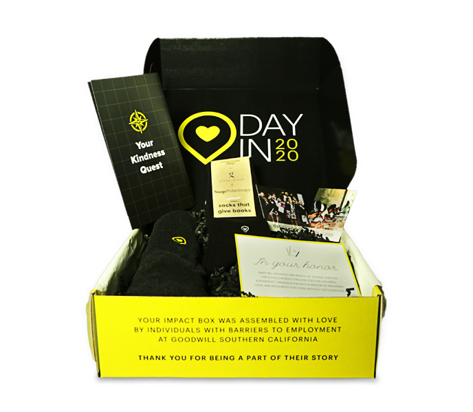
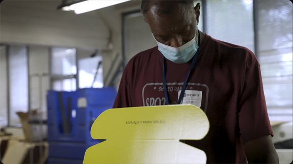
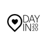
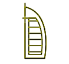
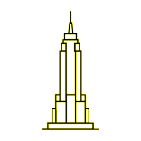

The Impact Box
This year, Snap has teamed up with Gifts for Good, social enterprises, and nonprofit organizations around the world to provide our team members with opportunities to spread kindness in our communities.

For every tree used to make our Impact Boxes, 20 trees were planted in partnership with Eden Reforestation Projects. Made in the USA from 100% recyclable materials.
Our Kindness Quests were printed at Goodwill Southern California Print Shop, providing jobs to individuals with barriers to employment.
The hoodie supports Fresh Lifelines For Youth, serving youth in the juvenile justice system and those at risk.
Each pair of socks provides one book to a child in need through Room To Read in India.
Our Impact Boxes were assembled at Goodwill Southern California to transform lives through the power of work.
Each “In Your Honor” donation card funds one month of school supplies for a child in need through Feed the Children.
For every tree used to make our Impact Boxes, 20 trees were planted in partnership with Eden Reforestation Projects. Made in the USA from 100% recyclable materials.
Our Kindness Quests were printed at Goodwill Southern California Print Shop, providing jobs to individuals with barriers to employment.
The hoodie supports Fresh Lifelines For Youth, serving youth in the juvenile justice system and those at risk.
Each pair of socks provides one book to a child in need through Room To Read in India.
Our Impact Boxes were assembled at Goodwill Southern California to transform lives through the power of work.
Each “In Your Honor” donation card funds one month of school supplies for a child in need through Feed the Children.
Send a Thank You Note

Our Impact Boxes were assembled with love at Goodwill Southern California through a program empowering individuals with barriers to employment to have dignified work, purpose, and pride in what they do. We encourage you to take a moment to share a note of gratitude to the team at Goodwill for their hard work putting together the boxes.
Snap will make sure your message gets to the Goodwill staff who assembled our Impact Boxes.
Donate
Snap is making a donation in your honor today to one of the organizations listed below. Please take time to learn about the four amazing organizations below and select your donation option. Please choose your donation by 11:59pm PT, November 13th.*
*Donations submitted after this time will not be made.
Vitamin Angels
Give one year of lifesaving vitamin A to a child in need
150 million children don’t get the Vitamin A they need. Our bodies rely on vitamin A for many purposes, all of which are essential for day-to-day activities and long-term health. When a child lacks this nutrient during the early stages of development, they can get sick, experience stunted growth, go blind and even die. Families with children in developing countries who are struggling with food insecurity are most at risk, because purchasing or growing vitamin A-rich foods isn’t always possible. LEARN MOREFeed the Children
Provide a nutritious meal to a child in need
Hunger is a global problem and Feed the Children operates in countries around the world where they can make the biggest impact. Internationally, Feed the Children implements a Child-Focused Community Development (CFCD) approach, which includes program activities in the areas of food and nutrition, health and water, education, and livelihoods. The organization works with vulnerable and at-risk children, their caregivers, and communities to cultivate the social, economic, cultural, and environmental conditions needed for families to thrive. LEARN MOREBaby2Baby
Provide a day’s worth of diapers to a baby in poverty
Baby2Baby is a non-profit organization that provides children living in poverty, ages 0-12 years, with diapers, clothing and all the basic necessities that every child deserves. Children living in poverty are the most vulnerable in any crisis, and COVID-19 is no exception. 1 in 3 families in this country were already choosing between diapers and food before the pandemic, and now the families that Baby2Baby serves are struggling even more due to months of lost income, millions of lost jobs and increased lack of access to these critical items. LEARN MOREDoctors Without Borders
Enable medical care for an individual battling COVID-19
In the face of the unprecedented global crisis of the coronavirus pandemic, MSF has created the COVID-19 Crisis Fund. The fund aims to raise urgently-needed money for their global emergency response to the new coronavirus pandemic and its consequences. The objectives of their global response to COVID-19 are to: slow down and stop or delay transmission of the virus and provide care for patients (particularly the seriously ill). Your donation will enable our urgently-needed medical care and support to be set up or continued in more than 70 countries. LEARN MORE

Choose Your Donation
Please tell us which donation you'd like Snap to make in your honor today.
Get Involved
Below is a list of clothing donation centers. If you don’t see one located near you, we suggest calling local non-profit organizations in your area. Hours of operation and policies have changed due to COVID-19 so make sure they are accepting donations prior to drop off. Please note that donating clothing is entirely voluntary, and that we only encourage you to participate in this activity if you feel safe and comfortable doing so.
North America
Asia Pacific
Europe & Middle East
Atlanta
Ansley Donation Center
Boulder
Sister Carmen
Boulder
Sister Carmen
Chicago
YWCA Shop For Good
Cradles to Crayons
Goodwill
Lambs Farm- Cedar Chest Thrift Shop
Dallas
Goodwill
DC
Martha's Table
Detroit
Salvation Army Thrift Store
Los Angeles
Goodwill SoCal
Join the Event
Find your region and join the Hopin event.
Asia Pacific
JOIN

Middle East
JOIN

North America
JOIN